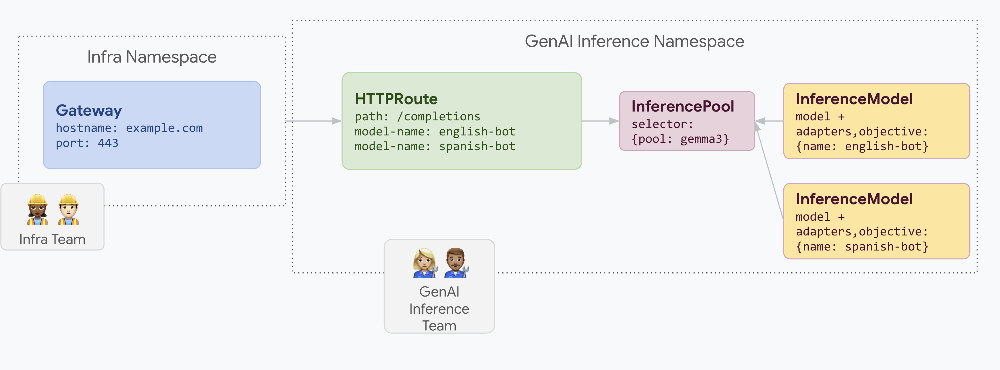

Serve LoRA adapters on a shared pool¶
A company wants to serve LLMs for document analysis and focuses on audiences in multiple languages, such as English and Spanish.
They have a fine-tuned LoRA adapter for each language, but need to efficiently use their GPU and TPU capacity.
You can use an Inference Gateway to deploy dynamic LoRA fine-tuned adapters for each language (for example, english-bot and spanish-bot) on a common base model and accelerator.
This lets you reduce the number of required accelerators by densely packing multiple models in a shared pool.
How¶
The following diagram illustrates how Inference Gateway serves multiple LoRA adapters on a shared pool.  This example illustrates how you can densely serve multiple LoRA adapters with distinct workload performance objectives on a common InferencePool.
apiVersion: gateway.networking.x-k8s.io/v1alpha1
kind: InferencePool
metadata:
name: gemma3
spec:
selector:
pool: gemma3
InferenceModel resource and associate these LoRA adapters to the relevant InferencePool resource.In this case, we associate these LoRA adapters to the gemma3 InferencePool resource created above.
apiVersion: inference.networking.x-k8s.io/v1alpha2
kind: InferenceModel
metadata:
name: english-bot
spec:
modelName: english-bot
criticality: Standard
poolRef:
name: gemma3
---
apiVersion: inference.networking.x-k8s.io/v1alpha2
kind: InferenceModel
metadata:
name: spanish-bot
spec:
modelName: spanish-bot
criticality: Critical
poolRef:
name: gemma3
HTTPRoute object.
apiVersion: gateway.networking.k8s.io/v1
kind: Gateway
metadata:
name: inference-gateway
spec:
listeners:
- protocol: HTTP
port: 80
name: http
---
kind: HTTPRoute
apiVersion: gateway.networking.k8s.io/v1
metadata:
name: routes-to-llms
spec:
parentRefs:
- name: inference-gateway
rules:
- matches:
path:
type: PathPrefix
value: /
backendRefs:
- name: gemma3
kind: InferencePool
Try it out¶
- Get the gateway IP:
IP=$(kubectl get gateway/inference-gateway -o jsonpath='{.status.addresses[0].value}'); PORT=80 - Send a few requests to model "english-bot" as follows:
curl -i ${IP}:${PORT}/v1/completions -H 'Content-Type: application/json' -d '{ "model": "english-bot", "prompt": "What is the color of the sky", "max_tokens": 100, "temperature": 0 }' - Send a few requests to model "spanish-bot" as follows:
curl -i ${IP}:${PORT}/v1/completions -H 'Content-Type: application/json' -d '{ "model": "spanish-bot", "prompt": "¿De qué color es...?", "max_tokens": 100, "temperature": 0 }'